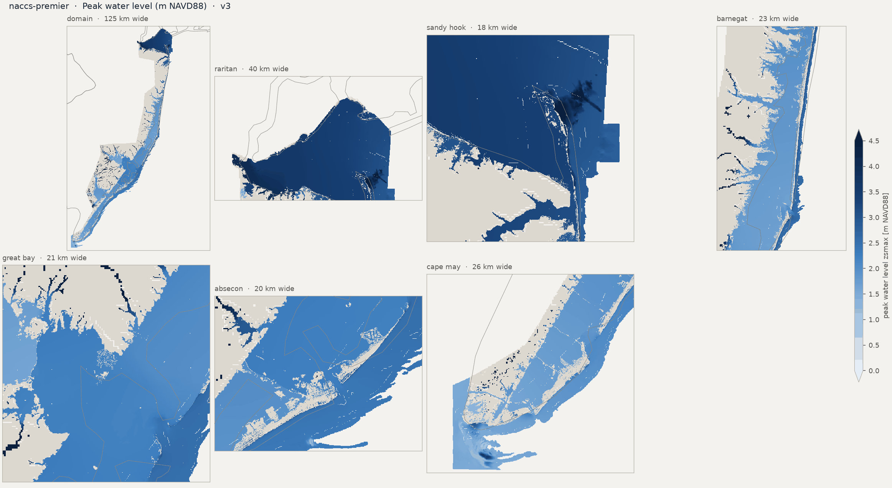
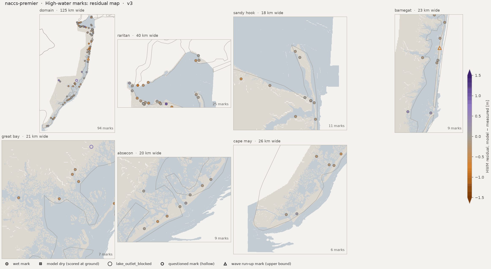
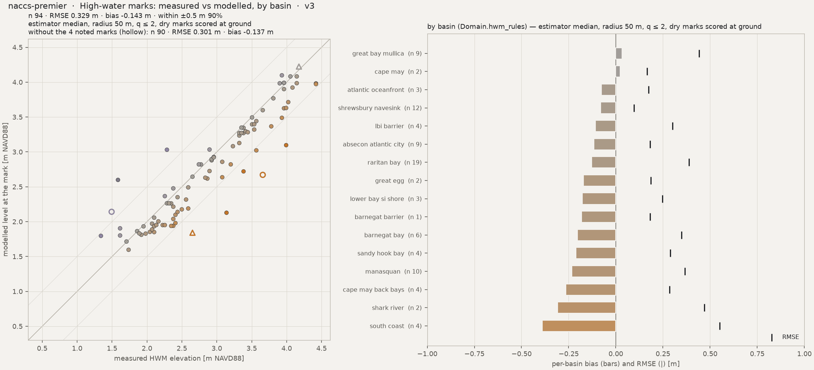
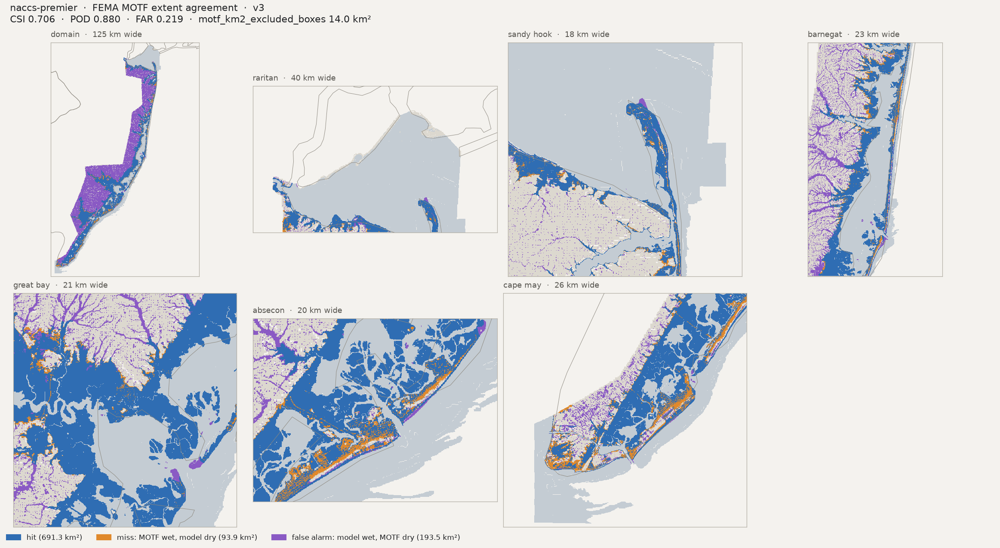
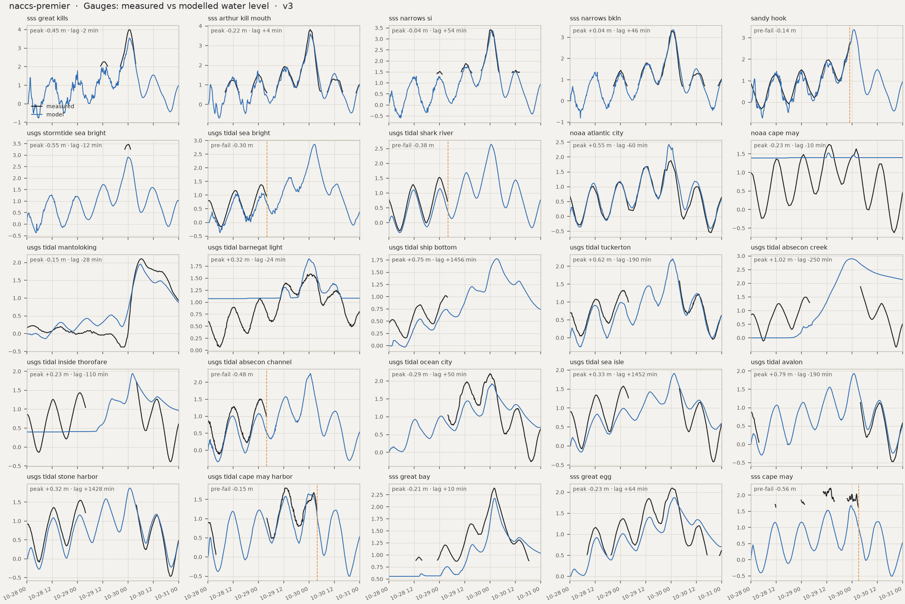
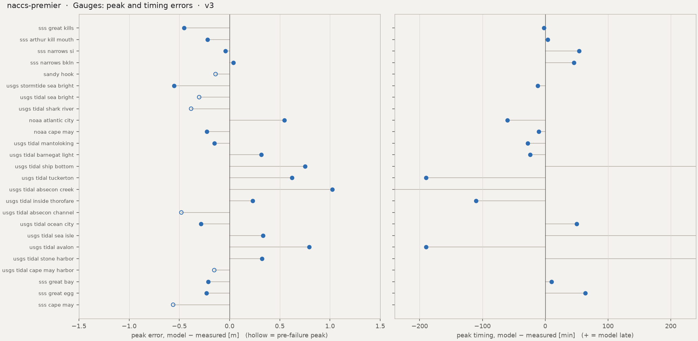
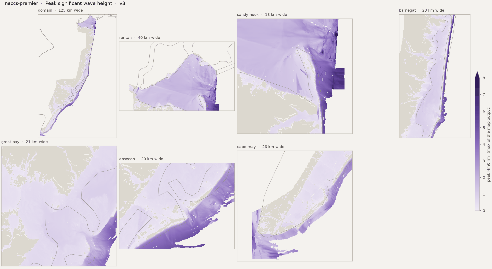

Run card, flags and the standard figure set. HWM numbers: estimator median, radius 50 m. Compare with naccs-premier
Preliminary research diagnostics — not peer-reviewed results.
HWM: estimator median, radius 50 m, q ≤ 2, dry marks scored at ground (the _scored keys). CSI / POD / FAR on sheet-valid land; km² excl. = motf_km2_excluded_boxes.







| peak_zb_sss_great_kills_m | -1.955272197723389 |
| peak_obs_sss_great_kills_m | 3.990640566666667 |
| peak_obs_time_sss_great_kills | 2012-10-30T00:42 |
| peak_mod_full_sss_great_kills_m | 3.536527872085572 |
| peak_mod_full_time_sss_great_kills | 2012-10-30T00:40 |
| peak_err_sss_great_kills_m | -0.4541126945810956 |
| peak_lag_sss_great_kills_min | -2.0 |
| peak_zb_sss_arthur_kill_mouth_m | -1.063024401664734 |
| peak_obs_sss_arthur_kill_mouth_m | 3.8134290000000006 |
| peak_obs_time_sss_arthur_kill_mouth | 2012-10-30T00:36 |
| peak_mod_full_sss_arthur_kill_mouth_m | 3.5938735008239746 |
| peak_mod_full_time_sss_arthur_kill_mouth | 2012-10-30T00:40 |
| peak_err_sss_arthur_kill_mouth_m | -0.219555499176026 |
| peak_lag_sss_arthur_kill_mouth_min | 4.0 |
| peak_zb_sss_narrows_si_m | -1.4567134380340576 |
| peak_obs_sss_narrows_si_m | 3.4239073 |
| peak_obs_time_sss_narrows_si | 2012-10-30T00:06 |
| peak_mod_full_sss_narrows_si_m | 3.382007122039795 |
| peak_mod_full_time_sss_narrows_si | 2012-10-30T01:00 |
| peak_err_sss_narrows_si_m | -0.0419001779602052 |
| peak_lag_sss_narrows_si_min | 54.0 |
| peak_zb_sss_narrows_bkln_m | -3.102429151535034 |
| peak_obs_sss_narrows_bkln_m | 3.315567833333333 |
| peak_obs_time_sss_narrows_bkln | 2012-10-30T00:24 |
| peak_mod_full_sss_narrows_bkln_m | 3.355140209197998 |
| peak_mod_full_time_sss_narrows_bkln | 2012-10-30T01:10 |
| peak_err_sss_narrows_bkln_m | 0.0395723758646648 |
| peak_lag_sss_narrows_bkln_min | 46.0 |
| peak_zb_sandy_hook_m | -4.232899188995361 |
| peak_obs_sandy_hook_m | 2.808 |
| peak_obs_time_sandy_hook | 2012-10-29T23:00 |
| peak_mod_full_sandy_hook_m | 3.3781838417053223 |
| peak_mod_full_time_sandy_hook | 2012-10-30T01:00 |
| peak_mod_prefail_sandy_hook_m | 2.6688528060913086 |
| peak_err_prefail_sandy_hook_m | -0.1391471939086912 |
| peak_record_ends_sandy_hook | 2012-10-29 23:00 |
| peak_zb_usgs_stormtide_sea_bright_m | -1.7469388246536257 |
| peak_obs_usgs_stormtide_sea_bright_m | 3.4651196864959743 |
| peak_obs_time_usgs_stormtide_sea_bright | 2012-10-30T00:12 |
| peak_mod_full_usgs_stormtide_sea_bright_m | 2.9138357639312744 |
| peak_mod_full_time_usgs_stormtide_sea_bright | 2012-10-30T00:00 |
| peak_err_usgs_stormtide_sea_bright_m | -0.5512839225646999 |
| peak_lag_usgs_stormtide_sea_bright_min | -12.0 |
| peak_zb_usgs_tidal_sea_bright_m | -4.3453803062438965 |
| peak_obs_usgs_tidal_sea_bright_m | 1.383792 |
| peak_obs_time_usgs_tidal_sea_bright | 2012-10-29T01:12 |
| peak_mod_full_usgs_tidal_sea_bright_m | 2.8567757606506348 |
| peak_mod_full_time_usgs_tidal_sea_bright | 2012-10-30T02:40 |
| peak_mod_prefail_usgs_tidal_sea_bright_m | 1.0812621116638184 |
| peak_err_prefail_usgs_tidal_sea_bright_m | -0.3025298883361818 |
| peak_record_ends_usgs_tidal_sea_bright | 2012-10-29 04:00 |
| peak_zb_usgs_tidal_shark_river_m | -4.118553638458252 |
| peak_obs_usgs_tidal_shark_river_m | 1.527048 |
| peak_obs_time_usgs_tidal_shark_river | 2012-10-29T00:00 |
| peak_mod_full_usgs_tidal_shark_river_m | 2.6381239891052246 |
| peak_mod_full_time_usgs_tidal_shark_river | 2012-10-30T00:40 |
| peak_mod_prefail_usgs_tidal_shark_river_m | 1.1473219394683838 |
| peak_err_prefail_usgs_tidal_shark_river_m | -0.3827740605316161 |
| peak_record_ends_usgs_tidal_shark_river | 2012-10-29 04:00 |
| peak_zb_noaa_atlantic_city_m | -7.114473819732666 |
| peak_obs_noaa_atlantic_city_m | 1.877 |
| peak_obs_time_noaa_atlantic_city | 2012-10-30T00:00 |
| peak_mod_full_noaa_atlantic_city_m | 2.423425912857056 |
| peak_mod_full_time_noaa_atlantic_city | 2012-10-29T23:00 |
| peak_err_noaa_atlantic_city_m | 0.5464259128570557 |
| peak_lag_noaa_atlantic_city_min | -60.0 |
| peak_zb_noaa_cape_may_m | 1.3890953063964844 |
| peak_obs_noaa_cape_may_m | 1.755 |
| peak_obs_time_noaa_cape_may | 2012-10-29T13:00 |
| peak_mod_full_noaa_cape_may_m | 1.5286190509796145 |
| peak_mod_full_time_noaa_cape_may | 2012-10-29T12:50 |
| peak_err_noaa_cape_may_m | -0.2263809490203856 |
| peak_lag_noaa_cape_may_min | -10.0 |
| peak_zb_usgs_tidal_mantoloking_m | -2.429171085357666 |
| peak_obs_usgs_tidal_mantoloking_m | 2.1061680000000003 |
| peak_obs_time_usgs_tidal_mantoloking | 2012-10-30T06:18 |
| peak_mod_full_usgs_tidal_mantoloking_m | 1.954606771469116 |
| peak_mod_full_time_usgs_tidal_mantoloking | 2012-10-30T05:50 |
| peak_err_usgs_tidal_mantoloking_m | -0.151561228530884 |
| peak_lag_usgs_tidal_mantoloking_min | -28.0 |
| peak_zb_usgs_tidal_barnegat_light_m | 1.0739723443984983 |
| peak_obs_usgs_tidal_barnegat_light_m | 1.588008 |
| peak_obs_time_usgs_tidal_barnegat_light | 2012-10-30T00:24 |
| peak_mod_full_usgs_tidal_barnegat_light_m | 1.9038667678833008 |
| peak_mod_full_time_usgs_tidal_barnegat_light | 2012-10-30T00:00 |
| peak_err_usgs_tidal_barnegat_light_m | 0.3158587678833007 |
| peak_lag_usgs_tidal_barnegat_light_min | -24.0 |
| peak_zb_usgs_tidal_ship_bottom_m | -4.615384578704834 |
| peak_obs_usgs_tidal_ship_bottom_m | 1.024128 |
| peak_obs_time_usgs_tidal_ship_bottom | 2012-10-29T02:54 |
| peak_mod_full_usgs_tidal_ship_bottom_m | 1.7750959396362305 |
| peak_mod_full_time_usgs_tidal_ship_bottom | 2012-10-30T03:10 |
| peak_err_usgs_tidal_ship_bottom_m | 0.7509679396362305 |
| peak_lag_usgs_tidal_ship_bottom_min | 1456.0 |
| peak_zb_usgs_tidal_tuckerton_m | -1.9723796844482424 |
| peak_obs_usgs_tidal_tuckerton_m | 1.591056 |
| peak_obs_time_usgs_tidal_tuckerton | 2012-10-30T04:00 |
| peak_mod_full_usgs_tidal_tuckerton_m | 2.212190628051758 |
| peak_mod_full_time_usgs_tidal_tuckerton | 2012-10-30T00:50 |
| peak_err_usgs_tidal_tuckerton_m | 0.6211346280517578 |
| peak_lag_usgs_tidal_tuckerton_min | -190.0 |
| peak_zb_usgs_tidal_absecon_creek_m | 2.4660839699208736e-06 |
| peak_obs_usgs_tidal_absecon_creek_m | 1.87452 |
| peak_obs_time_usgs_tidal_absecon_creek | 2012-10-30T04:00 |
| peak_mod_full_usgs_tidal_absecon_creek_m | 2.8965301513671875 |
| peak_mod_full_time_usgs_tidal_absecon_creek | 2012-10-29T23:50 |
| peak_err_usgs_tidal_absecon_creek_m | 1.022010151367187 |
| peak_lag_usgs_tidal_absecon_creek_min | -250.0 |
| peak_zb_usgs_tidal_inside_thorofare_m | 0.3978137075901031 |
| peak_obs_usgs_tidal_inside_thorofare_m | 1.712976 |
| peak_obs_time_usgs_tidal_inside_thorofare | 2012-10-30T04:00 |
| peak_mod_full_usgs_tidal_inside_thorofare_m | 1.94283413887024 |
| peak_mod_full_time_usgs_tidal_inside_thorofare | 2012-10-30T02:10 |
| peak_err_usgs_tidal_inside_thorofare_m | 0.2298581388702392 |
| peak_lag_usgs_tidal_inside_thorofare_min | -110.0 |
| peak_zb_usgs_tidal_absecon_channel_m | -2.4803500175476074 |
| peak_obs_usgs_tidal_absecon_channel_m | 1.5575280000000002 |
| peak_obs_time_usgs_tidal_absecon_channel | 2012-10-29T01:06 |
| peak_mod_full_usgs_tidal_absecon_channel_m | 2.2575714588165283 |
| peak_mod_full_time_usgs_tidal_absecon_channel | 2012-10-30T00:40 |
| peak_mod_prefail_usgs_tidal_absecon_channel_m | 1.0776338577270508 |
| peak_err_prefail_usgs_tidal_absecon_channel_m | -0.4798941422729494 |
| peak_record_ends_usgs_tidal_absecon_channel | 2012-10-29 03:54 |
| peak_zb_usgs_tidal_ocean_city_m | -3.884687662124634 |
| peak_obs_usgs_tidal_ocean_city_m | 2.2098 |
| peak_obs_time_usgs_tidal_ocean_city | 2012-10-30T00:00 |
| peak_mod_full_usgs_tidal_ocean_city_m | 1.9245142936706543 |
| peak_mod_full_time_usgs_tidal_ocean_city | 2012-10-30T00:50 |
| peak_err_usgs_tidal_ocean_city_m | -0.2852857063293457 |
| peak_lag_usgs_tidal_ocean_city_min | 50.0 |
| peak_zb_usgs_tidal_sea_isle_m | -1.7042393684387207 |
| peak_obs_usgs_tidal_sea_isle_m | 1.575816 |
| peak_obs_time_usgs_tidal_sea_isle | 2012-10-29T01:18 |
| peak_mod_full_usgs_tidal_sea_isle_m | 1.9081876277923584 |
| peak_mod_full_time_usgs_tidal_sea_isle | 2012-10-30T01:30 |
| peak_err_usgs_tidal_sea_isle_m | 0.3323716277923583 |
| peak_lag_usgs_tidal_sea_isle_min | 1452.0 |
| peak_zb_usgs_tidal_avalon_m | -5.937126636505127 |
| peak_obs_usgs_tidal_avalon_m | 1.139952 |
| peak_obs_time_usgs_tidal_avalon | 2012-10-30T04:00 |
| peak_mod_full_usgs_tidal_avalon_m | 1.9327600002288816 |
| peak_mod_full_time_usgs_tidal_avalon | 2012-10-30T00:50 |
| peak_err_usgs_tidal_avalon_m | 0.7928080002288818 |
| peak_lag_usgs_tidal_avalon_min | -190.0 |
| peak_zb_usgs_tidal_stone_harbor_m | -6.791902542114258 |
| peak_obs_usgs_tidal_stone_harbor_m | 1.551432 |
| peak_obs_time_usgs_tidal_stone_harbor | 2012-10-29T01:12 |
| peak_mod_full_usgs_tidal_stone_harbor_m | 1.87261176109314 |
| peak_mod_full_time_usgs_tidal_stone_harbor | 2012-10-30T01:00 |
| peak_err_usgs_tidal_stone_harbor_m | 0.3211797610931395 |
| peak_lag_usgs_tidal_stone_harbor_min | 1428.0 |
| peak_zb_usgs_tidal_cape_may_harbor_m | -1.3016067743301392 |
| peak_obs_usgs_tidal_cape_may_harbor_m | 1.79832 |
| peak_obs_time_usgs_tidal_cape_may_harbor | 2012-10-29T12:42 |
| peak_mod_full_usgs_tidal_cape_may_harbor_m | 1.646185278892517 |
| peak_mod_full_time_usgs_tidal_cape_may_harbor | 2012-10-29T23:50 |
| peak_mod_prefail_usgs_tidal_cape_may_harbor_m | 1.646185278892517 |
| peak_err_prefail_usgs_tidal_cape_may_harbor_m | -0.152134721107483 |
| peak_record_ends_usgs_tidal_cape_may_harbor | 2012-10-30 03:54 |
| peak_zb_sss_great_bay_m | 0.5555722713470459 |
| peak_obs_sss_great_bay_m | 2.389551566666667 |
| peak_obs_time_sss_great_bay | 2012-10-30T02:00 |
| peak_mod_full_sss_great_bay_m | 2.177633762359619 |
| peak_mod_full_time_sss_great_bay | 2012-10-30T02:10 |
| peak_err_sss_great_bay_m | -0.2119178043070477 |
| peak_lag_sss_great_bay_min | 10.0 |
| peak_zb_sss_great_egg_m | -1.4922324419021606 |
| peak_obs_sss_great_egg_m | 2.098467566666667 |
| peak_obs_time_sss_great_egg | 2012-10-30T00:36 |
| peak_mod_full_sss_great_egg_m | 1.870055675506592 |
| peak_mod_full_time_sss_great_egg | 2012-10-30T01:40 |
| peak_err_sss_great_egg_m | -0.228411891160075 |
| peak_lag_sss_great_egg_min | 64.0 |
| peak_zb_sss_cape_may_m | -7.165440559387207 |
| peak_obs_sss_cape_may_m | 2.24273711641651 |
| peak_obs_time_sss_cape_may | 2012-10-29T13:48 |
| peak_mod_full_sss_cape_may_m | 1.6810979843139648 |
| peak_mod_full_time_sss_cape_may | 2012-10-29T23:30 |
| peak_mod_prefail_sss_cape_may_m | 1.6810979843139648 |
| peak_err_prefail_sss_cape_may_m | -0.5616391321025458 |
| peak_record_ends_sss_cape_may | 2012-10-30 03:12 |
| tide_obs_range_sss_great_kills_m | 0.204 |
| tide_mod_range_sss_great_kills_m | 2.143 |
| tide_mod_drift_sss_great_kills_m | 0.415 |
| tide_mod_frac_rising_sss_great_kills | 0.514 |
| tide_mod_is_tidal_sss_great_kills | True |
| tide_range_damping_sss_great_kills_m | -1.938 |
| phase_lag_sss_great_kills_min | |
| tide_obs_range_sss_arthur_kill_mouth_m | 1.309 |
| tide_mod_range_sss_arthur_kill_mouth_m | 2.052 |
| tide_mod_drift_sss_arthur_kill_mouth_m | 0.304 |
| tide_mod_frac_rising_sss_arthur_kill_mouth | 0.511 |
| tide_mod_is_tidal_sss_arthur_kill_mouth | True |
| tide_range_damping_sss_arthur_kill_mouth_m | -0.743 |
| phase_lag_sss_arthur_kill_mouth_min | 6.0 |
| tide_obs_range_sss_narrows_si_m | 0.407 |
| tide_mod_range_sss_narrows_si_m | 1.774 |
| tide_mod_drift_sss_narrows_si_m | 0.443 |
| tide_mod_frac_rising_sss_narrows_si | 0.474 |
| tide_mod_is_tidal_sss_narrows_si | True |
| tide_range_damping_sss_narrows_si_m | -1.368 |
| phase_lag_sss_narrows_si_min | -55.8 |
| tide_obs_range_sss_narrows_bkln_m | 1.035 |
| tide_mod_range_sss_narrows_bkln_m | 1.85 |
| tide_mod_drift_sss_narrows_bkln_m | 0.432 |
| tide_mod_frac_rising_sss_narrows_bkln | 0.474 |
| tide_mod_is_tidal_sss_narrows_bkln | True |
| tide_range_damping_sss_narrows_bkln_m | -0.815 |
| phase_lag_sss_narrows_bkln_min | -120.0 |
| tide_obs_range_sandy_hook_m | 2.029 |
| tide_mod_range_sandy_hook_m | 2.052 |
| tide_mod_drift_sandy_hook_m | 0.509 |
| tide_mod_frac_rising_sandy_hook | 0.547 |
| tide_mod_is_tidal_sandy_hook | True |
| tide_range_damping_sandy_hook_m | -0.023 |
| phase_lag_sandy_hook_min | 0.4 |
| tide_obs_range_usgs_stormtide_sea_bright_m | |
| tide_mod_range_usgs_stormtide_sea_bright_m | 1.532 |
| tide_mod_drift_usgs_stormtide_sea_bright_m | 0.472 |
| tide_mod_frac_rising_usgs_stormtide_sea_bright | 0.552 |
| tide_mod_is_tidal_usgs_stormtide_sea_bright | True |
| tide_range_damping_usgs_stormtide_sea_bright_m | |
| phase_lag_usgs_stormtide_sea_bright_min | |
| tide_obs_range_usgs_tidal_sea_bright_m | 1.283 |
| tide_mod_range_usgs_tidal_sea_bright_m | 1.099 |
| tide_mod_drift_usgs_tidal_sea_bright_m | 0.421 |
| tide_mod_frac_rising_usgs_tidal_sea_bright | 0.504 |
| tide_mod_is_tidal_usgs_tidal_sea_bright | True |
| tide_range_damping_usgs_tidal_sea_bright_m | 0.184 |
| phase_lag_usgs_tidal_sea_bright_min | 25.3 |
| tide_obs_range_usgs_tidal_shark_river_m | 1.539 |
| tide_mod_range_usgs_tidal_shark_river_m | 1.369 |
| tide_mod_drift_usgs_tidal_shark_river_m | 0.507 |
| tide_mod_frac_rising_usgs_tidal_shark_river | 0.518 |
| tide_mod_is_tidal_usgs_tidal_shark_river | True |
| tide_range_damping_usgs_tidal_shark_river_m | 0.17 |
| phase_lag_usgs_tidal_shark_river_min | 8.1 |
| tide_obs_range_noaa_atlantic_city_m | 1.798 |
| tide_mod_range_noaa_atlantic_city_m | 1.377 |
| tide_mod_drift_noaa_atlantic_city_m | 0.625 |
| tide_mod_frac_rising_noaa_atlantic_city | 0.532 |
| tide_mod_is_tidal_noaa_atlantic_city | True |
| tide_range_damping_noaa_atlantic_city_m | 0.421 |
| phase_lag_noaa_atlantic_city_min | 7.5 |
| tide_obs_range_noaa_cape_may_m | 1.561 |
| tide_mod_range_noaa_cape_may_m | 0.047 |
| tide_mod_drift_noaa_cape_may_m | 0.057 |
| tide_mod_frac_rising_noaa_cape_may | 1.0 |
| tide_mod_is_tidal_noaa_cape_may | True |
| tide_range_damping_noaa_cape_may_m | 1.514 |
| phase_lag_noaa_cape_may_min | -120.0 |
| tide_obs_range_usgs_tidal_mantoloking_m | 0.238 |
| tide_mod_range_usgs_tidal_mantoloking_m | 0.323 |
| tide_mod_drift_usgs_tidal_mantoloking_m | 0.242 |
| tide_mod_frac_rising_usgs_tidal_mantoloking | 0.586 |
| tide_mod_is_tidal_usgs_tidal_mantoloking | True |
| tide_range_damping_usgs_tidal_mantoloking_m | -0.085 |
| phase_lag_usgs_tidal_mantoloking_min | -50.6 |
| tide_obs_range_usgs_tidal_barnegat_light_m | 1.003 |
| tide_mod_range_usgs_tidal_barnegat_light_m | 0.212 |
| tide_mod_drift_usgs_tidal_barnegat_light_m | 0.231 |
| tide_mod_frac_rising_usgs_tidal_barnegat_light | 0.909 |
| tide_mod_is_tidal_usgs_tidal_barnegat_light | True |
| tide_range_damping_usgs_tidal_barnegat_light_m | 0.791 |
| phase_lag_usgs_tidal_barnegat_light_min | 0.4 |
| tide_obs_range_usgs_tidal_ship_bottom_m | 0.579 |
| tide_mod_range_usgs_tidal_ship_bottom_m | 0.339 |
| tide_mod_drift_usgs_tidal_ship_bottom_m | 0.539 |
| tide_mod_frac_rising_usgs_tidal_ship_bottom | 0.607 |
| tide_mod_is_tidal_usgs_tidal_ship_bottom | True |
| tide_range_damping_usgs_tidal_ship_bottom_m | 0.24 |
| phase_lag_usgs_tidal_ship_bottom_min | -1.2 |
| tide_obs_range_usgs_tidal_tuckerton_m | 0.927 |
| tide_mod_range_usgs_tidal_tuckerton_m | 1.051 |
| tide_mod_drift_usgs_tidal_tuckerton_m | 0.482 |
| tide_mod_frac_rising_usgs_tidal_tuckerton | 0.553 |
| tide_mod_is_tidal_usgs_tidal_tuckerton | True |
| tide_range_damping_usgs_tidal_tuckerton_m | -0.124 |
| phase_lag_usgs_tidal_tuckerton_min | -28.4 |
| tide_obs_range_usgs_tidal_absecon_creek_m | 1.183 |
| tide_mod_range_usgs_tidal_absecon_creek_m | 0.504 |
| tide_mod_drift_usgs_tidal_absecon_creek_m | 1.32 |
| tide_mod_frac_rising_usgs_tidal_absecon_creek | 0.894 |
| tide_mod_is_tidal_usgs_tidal_absecon_creek | True |
| tide_range_damping_usgs_tidal_absecon_creek_m | 0.679 |
| phase_lag_usgs_tidal_absecon_creek_min | 33.2 |
| tide_obs_range_usgs_tidal_inside_thorofare_m | 1.222 |
| tide_mod_range_usgs_tidal_inside_thorofare_m | 0.182 |
| tide_mod_drift_usgs_tidal_inside_thorofare_m | 0.214 |
| tide_mod_frac_rising_usgs_tidal_inside_thorofare | 1.0 |
| tide_mod_is_tidal_usgs_tidal_inside_thorofare | True |
| tide_range_damping_usgs_tidal_inside_thorofare_m | 1.04 |
| phase_lag_usgs_tidal_inside_thorofare_min | -120.0 |
| tide_obs_range_usgs_tidal_absecon_channel_m | 1.341 |
| tide_mod_range_usgs_tidal_absecon_channel_m | 1.232 |
| tide_mod_drift_usgs_tidal_absecon_channel_m | 0.513 |
| tide_mod_frac_rising_usgs_tidal_absecon_channel | 0.507 |
| tide_mod_is_tidal_usgs_tidal_absecon_channel | True |
| tide_range_damping_usgs_tidal_absecon_channel_m | 0.109 |
| phase_lag_usgs_tidal_absecon_channel_min | -32.9 |
| tide_obs_range_usgs_tidal_ocean_city_m | 1.134 |
| tide_mod_range_usgs_tidal_ocean_city_m | 0.733 |
| tide_mod_drift_usgs_tidal_ocean_city_m | 0.453 |
| tide_mod_frac_rising_usgs_tidal_ocean_city | 0.447 |
| tide_mod_is_tidal_usgs_tidal_ocean_city | True |
| tide_range_damping_usgs_tidal_ocean_city_m | 0.401 |
| phase_lag_usgs_tidal_ocean_city_min | 46.8 |
| tide_obs_range_usgs_tidal_sea_isle_m | 1.207 |
| tide_mod_range_usgs_tidal_sea_isle_m | 0.632 |
| tide_mod_drift_usgs_tidal_sea_isle_m | 0.439 |
| tide_mod_frac_rising_usgs_tidal_sea_isle | 0.556 |
| tide_mod_is_tidal_usgs_tidal_sea_isle | True |
| tide_range_damping_usgs_tidal_sea_isle_m | 0.575 |
| phase_lag_usgs_tidal_sea_isle_min | -3.9 |
| tide_obs_range_usgs_tidal_avalon_m | |
| tide_mod_range_usgs_tidal_avalon_m | 1.188 |
| tide_mod_drift_usgs_tidal_avalon_m | 0.359 |
| tide_mod_frac_rising_usgs_tidal_avalon | 0.532 |
| tide_mod_is_tidal_usgs_tidal_avalon | True |
| tide_range_damping_usgs_tidal_avalon_m | |
| phase_lag_usgs_tidal_avalon_min | |
| tide_obs_range_usgs_tidal_stone_harbor_m | 1.21 |
| tide_mod_range_usgs_tidal_stone_harbor_m | 1.164 |
| tide_mod_drift_usgs_tidal_stone_harbor_m | 0.351 |
| tide_mod_frac_rising_usgs_tidal_stone_harbor | 0.489 |
| tide_mod_is_tidal_usgs_tidal_stone_harbor | True |
| tide_range_damping_usgs_tidal_stone_harbor_m | 0.046 |
| phase_lag_usgs_tidal_stone_harbor_min | -8.9 |
| tide_obs_range_usgs_tidal_cape_may_harbor_m | 1.186 |
| tide_mod_range_usgs_tidal_cape_may_harbor_m | 1.381 |
| tide_mod_drift_usgs_tidal_cape_may_harbor_m | 0.314 |
| tide_mod_frac_rising_usgs_tidal_cape_may_harbor | 0.518 |
| tide_mod_is_tidal_usgs_tidal_cape_may_harbor | True |
| tide_range_damping_usgs_tidal_cape_may_harbor_m | -0.196 |
| phase_lag_usgs_tidal_cape_may_harbor_min | 48.2 |
| tide_obs_range_sss_great_bay_m | 0.401 |
| tide_mod_range_sss_great_bay_m | 0.196 |
| tide_mod_drift_sss_great_bay_m | 0.235 |
| tide_mod_frac_rising_sss_great_bay | 0.685 |
| tide_mod_is_tidal_sss_great_bay | True |
| tide_range_damping_sss_great_bay_m | 0.205 |
| phase_lag_sss_great_bay_min | 91.7 |
| tide_obs_range_sss_great_egg_m | 1.225 |
| tide_mod_range_sss_great_egg_m | 0.699 |
| tide_mod_drift_sss_great_egg_m | 0.388 |
| tide_mod_frac_rising_sss_great_egg | 0.457 |
| tide_mod_is_tidal_sss_great_egg | True |
| tide_range_damping_sss_great_egg_m | 0.526 |
| phase_lag_sss_great_egg_min | 14.7 |
| tide_obs_range_sss_cape_may_m | 0.401 |
| tide_mod_range_sss_cape_may_m | 1.38 |
| tide_mod_drift_sss_cape_may_m | 0.393 |
| tide_mod_frac_rising_sss_cape_may | 0.521 |
| tide_mod_is_tidal_sss_cape_may | True |
| tide_range_damping_sss_cape_may_m | -0.979 |
| phase_lag_sss_cape_may_min | -4.3 |
| hwm_estimator | median |
| hwm_radius_m | 50.0 |
| hwm_n_scored | 94 |
| hwm_n_dry_scored | 0 |
| hwm_rmse_scored_m | 0.3293705909080652 |
| hwm_bias_scored_m | -0.1429530653040459 |
| hwm_within0.5_scored | 0.9042553191489362 |
| hwm_n_wet | 138 |
| hwm_n_dry | 2 |
| hwm_rmse_m | 0.3293705909080652 |
| hwm_bias_m | -0.1429530653040459 |
| hwm_within0.5 | 0.9042553191489362 |
| hwm_n_delaware_bay_shore | 0 |
| hwm_bias_delaware_bay_shore_m | |
| hwm_rmse_delaware_bay_shore_m | |
| hwm_n_scored_delaware_bay_shore | 0 |
| hwm_n_dry_delaware_bay_shore | 0 |
| hwm_bias_scored_delaware_bay_shore_m | |
| hwm_rmse_scored_delaware_bay_shore_m | |
| hwm_n_cape_may | 2 |
| hwm_bias_cape_may_m | 0.0234447112083434 |
| hwm_rmse_cape_may_m | 0.1652005716602369 |
| hwm_n_scored_cape_may | 2 |
| hwm_n_dry_cape_may | 0 |
| hwm_bias_scored_cape_may_m | 0.0234447112083434 |
| hwm_rmse_scored_cape_may_m | 0.1652005716602369 |
| hwm_n_cape_may_back_bays | 4 |
| hwm_bias_cape_may_back_bays_m | -0.2657502222061156 |
| hwm_rmse_cape_may_back_bays_m | 0.2848008881269843 |
| hwm_n_scored_cape_may_back_bays | 4 |
| hwm_n_dry_cape_may_back_bays | 0 |
| hwm_bias_scored_cape_may_back_bays_m | -0.2657502222061156 |
| hwm_rmse_scored_cape_may_back_bays_m | 0.2848008881269843 |
| hwm_n_great_egg | 2 |
| hwm_bias_great_egg_m | -0.1711292152404786 |
| hwm_rmse_great_egg_m | 0.1856248783046766 |
| hwm_n_scored_great_egg | 2 |
| hwm_n_dry_great_egg | 0 |
| hwm_bias_scored_great_egg_m | -0.1711292152404786 |
| hwm_rmse_scored_great_egg_m | 0.1856248783046766 |
| hwm_n_absecon_atlantic_city | 9 |
| hwm_bias_absecon_atlantic_city_m | -0.1152256611718071 |
| hwm_rmse_absecon_atlantic_city_m | 0.1819802319398694 |
| hwm_n_scored_absecon_atlantic_city | 9 |
| hwm_n_dry_absecon_atlantic_city | 0 |
| hwm_bias_scored_absecon_atlantic_city_m | -0.1152256611718071 |
| hwm_rmse_scored_absecon_atlantic_city_m | 0.1819802319398694 |
| hwm_n_lbi_barrier | 4 |
| hwm_bias_lbi_barrier_m | -0.1087450828552245 |
| hwm_rmse_lbi_barrier_m | 0.2999194320770098 |
| hwm_n_scored_lbi_barrier | 4 |
| hwm_n_dry_lbi_barrier | 0 |
| hwm_bias_scored_lbi_barrier_m | -0.1087450828552245 |
| hwm_rmse_scored_lbi_barrier_m | 0.2999194320770098 |
| hwm_n_great_bay_mullica | 9 |
| hwm_bias_great_bay_mullica_m | 0.0319752756754557 |
| hwm_rmse_great_bay_mullica_m | 0.4421264776066471 |
| hwm_n_scored_great_bay_mullica | 9 |
| hwm_n_dry_great_bay_mullica | 0 |
| hwm_bias_scored_great_bay_mullica_m | 0.0319752756754557 |
| hwm_rmse_scored_great_bay_mullica_m | 0.4421264776066471 |
| hwm_n_manasquan | 10 |
| hwm_bias_manasquan_m | -0.2331790309906006 |
| hwm_rmse_manasquan_m | 0.3656219582580071 |
| hwm_n_scored_manasquan | 10 |
| hwm_n_dry_manasquan | 0 |
| hwm_bias_scored_manasquan_m | -0.2331790309906006 |
| hwm_rmse_scored_manasquan_m | 0.3656219582580071 |
| hwm_n_barnegat_barrier | 1 |
| hwm_bias_barnegat_barrier_m | -0.181330856323242 |
| hwm_rmse_barnegat_barrier_m | 0.181330856323242 |
| hwm_n_scored_barnegat_barrier | 1 |
| hwm_n_dry_barnegat_barrier | 0 |
| hwm_bias_scored_barnegat_barrier_m | -0.181330856323242 |
| hwm_rmse_scored_barnegat_barrier_m | 0.181330856323242 |
| hwm_n_barnegat_bay | 6 |
| hwm_bias_barnegat_bay_m | -0.2032549125353495 |
| hwm_rmse_barnegat_bay_m | 0.3489096361420758 |
| hwm_n_scored_barnegat_bay | 6 |
| hwm_n_dry_barnegat_bay | 0 |
| hwm_bias_scored_barnegat_bay_m | -0.2032549125353495 |
| hwm_rmse_scored_barnegat_bay_m | 0.3489096361420758 |
| hwm_n_shark_river | 2 |
| hwm_bias_shark_river_m | -0.3077947769165039 |
| hwm_rmse_shark_river_m | 0.469343827184749 |
| hwm_n_scored_shark_river | 2 |
| hwm_n_dry_shark_river | 0 |
| hwm_bias_scored_shark_river_m | -0.3077947769165039 |
| hwm_rmse_scored_shark_river_m | 0.469343827184749 |
| hwm_n_south_coast | 4 |
| hwm_bias_south_coast_m | -0.3893580737113953 |
| hwm_rmse_south_coast_m | 0.5509360415658082 |
| hwm_n_scored_south_coast | 4 |
| hwm_n_dry_south_coast | 0 |
| hwm_bias_scored_south_coast_m | -0.3893580737113953 |
| hwm_rmse_scored_south_coast_m | 0.5509360415658082 |
| hwm_n_sandy_hook_bay | 4 |
| hwm_bias_sandy_hook_bay_m | -0.2112208905220031 |
| hwm_rmse_sandy_hook_bay_m | 0.2881187082004802 |
| hwm_n_scored_sandy_hook_bay | 4 |
| hwm_n_dry_sandy_hook_bay | 0 |
| hwm_bias_scored_sandy_hook_bay_m | -0.2112208905220031 |
| hwm_rmse_scored_sandy_hook_bay_m | 0.2881187082004802 |
| hwm_n_raritan_bay | 19 |
| hwm_bias_raritan_bay_m | -0.1277626272502697 |
| hwm_rmse_raritan_bay_m | 0.3879866448477028 |
| hwm_n_scored_raritan_bay | 19 |
| hwm_n_dry_raritan_bay | 0 |
| hwm_bias_scored_raritan_bay_m | -0.1277626272502697 |
| hwm_rmse_scored_raritan_bay_m | 0.3879866448477028 |
| hwm_n_lower_bay_si_shore | 3 |
| hwm_bias_lower_bay_si_shore_m | -0.1778503386179604 |
| hwm_rmse_lower_bay_si_shore_m | 0.2469255795682915 |
| hwm_n_scored_lower_bay_si_shore | 3 |
| hwm_n_dry_lower_bay_si_shore | 0 |
| hwm_bias_scored_lower_bay_si_shore_m | -0.1778503386179604 |
| hwm_rmse_scored_lower_bay_si_shore_m | 0.2469255795682915 |
| hwm_n_atlantic_oceanfront | 3 |
| hwm_bias_atlantic_oceanfront_m | -0.0768860435485838 |
| hwm_rmse_atlantic_oceanfront_m | 0.172950709601319 |
| hwm_n_scored_atlantic_oceanfront | 3 |
| hwm_n_dry_atlantic_oceanfront | 0 |
| hwm_bias_scored_atlantic_oceanfront_m | -0.0768860435485838 |
| hwm_rmse_scored_atlantic_oceanfront_m | 0.172950709601319 |
| hwm_n_shrewsbury_navesink | 12 |
| hwm_bias_shrewsbury_navesink_m | -0.079394110361735 |
| hwm_rmse_shrewsbury_navesink_m | 0.096985112177269 |
| hwm_n_scored_shrewsbury_navesink | 12 |
| hwm_n_dry_shrewsbury_navesink | 0 |
| hwm_bias_scored_shrewsbury_navesink_m | -0.079394110361735 |
| hwm_rmse_scored_shrewsbury_navesink_m | 0.096985112177269 |
| hwm_n_unclassified | 0 |
| hwm_bias_unclassified_m | |
| hwm_rmse_unclassified_m | |
| hwm_n_scored_unclassified | 0 |
| hwm_n_dry_unclassified | 0 |
| hwm_bias_scored_unclassified_m | |
| hwm_rmse_scored_unclassified_m | |
| motf_csi | 0.7063185608126189 |
| motf_pod | 0.8804115244498102 |
| motf_far | 0.2187251507642153 |
| motf_km2_unsimulated | 7818.770925 |
| motf_km2_unsim_motfwet | 183.817575 |
| motf_km2_unsim_modwet | 0.01935 |
| motf_km2_excluded_boxes | 14.037525 |
| motf_km2_fa_connected | 79.354125 |
| motf_km2_fa_disconnected | 114.1749 |
| motf_km2_fa_rainonly | 0.0 |
| motf_far_connected | 0.1029730912598784 |
| motf_csi_connected | 0.7995994111927511 |
| domain | v3 |
| extent_admissible | True |
| engine | bin:v2.3.3-winddir-fix-1-gf11@673ee3bf |
| snapwave_direction | imposed |
| subgrid | _subgrid_buildings@8518110d |
| retired_to | |
| wind_scale | 1.0 |
| sea_level_offset | |
| motf_km2_excluded_invalid |